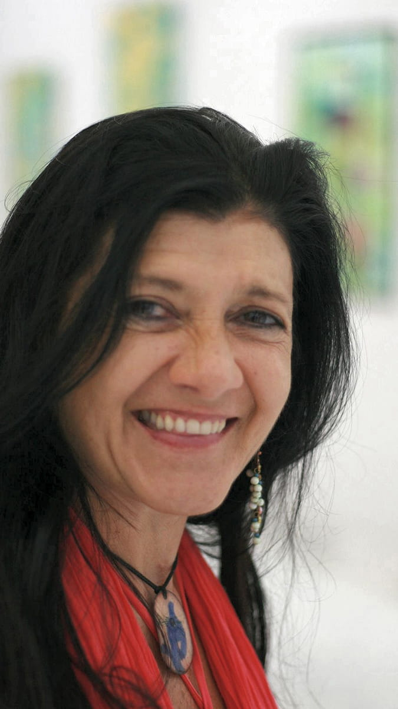

About me
I am a multidisciplinary visual
artist based in Berlin.
My work moves between sculpture, painting, installation, and poetic
visual language — a quiet dialogue between material, memory, and
inner landscapes.
Born in Caracas, Venezuela, I studied at the Cristóbal Rojas School of Fine Arts before continuing my artistic formation in Brazil and Argentina. For more than twenty years, I have developed a personal visual language shaped by reliefs, textures, signs, and symbolic forms.
Through my work, I explore the connection between nature, human consciousness, and archetypal imagery. Organic structures emerge through layers and materials, like fragments of an inner writing. A personal calligraphy runs through my sculptures and paintings as a poetic thread.
I work with wood, ceramic, pigments, gold leaf, ink, and assemblage techniques. I am drawn to the moment when material begins to speak — when surface, space, and form unfold into their own quiet narrative.
My works have been exhibited across Europe, Latin America, and the United States, and are now created in my Berlin studio through an ongoing process of silence, observation, and transformation.

I have been a member of the bbk – Berlin Association of Visual Artists – since 2025.